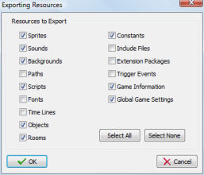
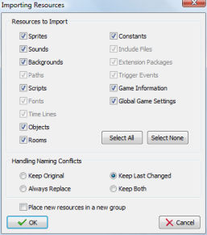

Note: Import and export of resources is only for experienced users. Carefully read this section before using these features. Also, always make a back-up copy of your game before importing resources.
Sometimes you want to copy certain resources (sprites, sounds, rooms, etc.) from one game to another game. For example when you want to create a new game using the same sprites and sounds as another game. Or when you are working together on a game. One of you might have created some additional rooms that you then want to import in the other game. To this end Game Maker has commands to import and export resources.
To export resources, choose Export Resources from the File menu. First of all it is checked whether all resources have different names. Because resources in one game are linked to the ones in the other game by name, it is essential that all resources have different names. If not, you get an error message and no resources can be exported. Otherwise, a file selector is shown in which you can indicate the name of the file in which you want to export the resources. These files must end with the extension .gmres. Next the following form is shown:

In this form you can indicate which resources must be exported. Default all are exported but you can select the particular types of resources you want to export. Care must be taken when exporting objects, timelines, or rooms. These will refer to sprites, sounds, triggers, etc. So if you do not export these other resources as well you must be certain that these other resources already exist in the game in which you are going to import the resources (under the same names). If you are uncertain, better export everything.
Once you have a file containing resources you can import them in a different game by choosing Import Resources from the File menu. First of all it is checked whether all resources have different names. Again, because resources in one game are linked to the ones in the other game by name, it is essential that all resources have different names. If not, you get an error message and no resources can be imported. Otherwise, a file selector is shown in which you can indicate the name of the file from which you want to import the resources. These files will end with the extension .gmres. Next all open property forms are closed. This is necessary because imported resources might replace existing ones. Next the following form is shown:

All types of resources in the file are shown. (The ones that were not exported and grayed out.) You can select which of these resources you want to import. Most of the time you want to import all but sometimes you want to make a selection. Be careful when importing objects, rooms, or timelines while not importing other resources. As indicated above this can lead to problems if the resources they refer to do not exist in your game under the same name. In such a case they will be replaced by non-existing resources. (For example, in the rooms it means the corresponding instances will be removed.)
When resources in the file have the same name as resources in the game a naming conflict appears. You can indicate how that should be resolved. The default is that you keep the resource that was changed last. You can however also choose to always keep the original in the game or always replace it with the resource in the file. A fourth option is to keep both. Only use this when it is absolutely necessary, because you will now end up with multiple resources with the same name which can lead to conflicts when referring to them. When you import resources into an empty game, better choose to always replace them. (This may sound strange but for example otherwise the global game settings will not be replaced as the new empty game is of a more recent date!)
Finally you can indicate whether to place the new resources (that is, the ones that do not already occur) in a new group. This might be useful to distinguish (visually) the imported resources from the existing ones. If you check this box the new resources will be place in a group. The name of this group is the name of the import file.
Once you press OK the resources are added to the game, replacing existing resources with the same name when required. You will see them appear in the resource selector at the left.
Importing and exporting resources is a powerful mechanism, in particular when you are working on a game with multiple people. However, if you do not understand what you are doing it might lead to errors and frustration. Here are some important warnings that you should read and understand.